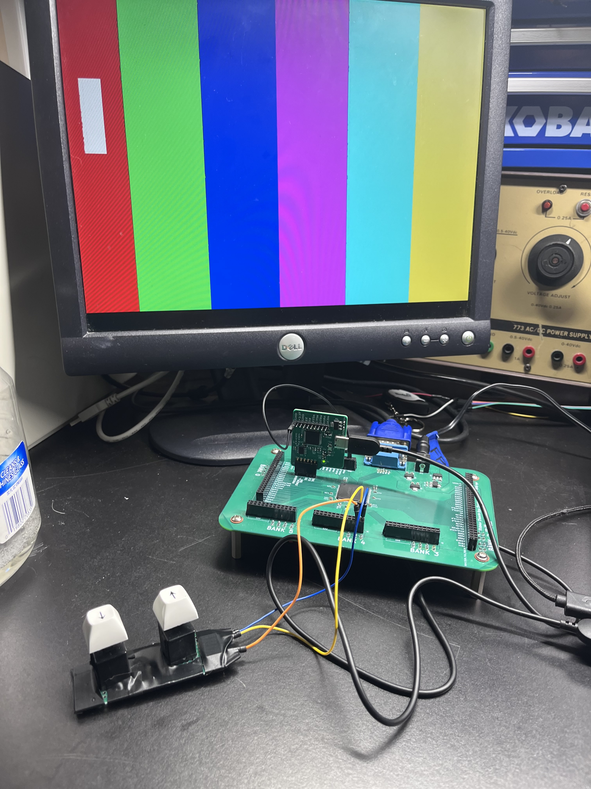

_ _ _ _ _ ____ _ _ _
| \ | (_) ___| |__ ___ | | __ _ ___ | _ \(_) __ _ _ __ ___| |_| |_ ___
| \| | |/ __| '_ \ / _ \ | |/ _` / __| | |_) | |/ _` | '_ \ / _ \ __| __/ _ \
| |\ | | (__| | | | (_) | | | (_| \__ \ | __/| | (_| | | | | __/ |_| || (_) |
|_| \_|_|\___|_| |_|\___/ |_|\__,_|___/ |_| |_|\__,_|_| |_|\___|\__|\__\___/

This was my first FPGA board that I designed and is also one of my earlier boards. I learned a lot about board design when I made this FPGA breakout board.
Specs consist of Lattice MachXO2 7000HC, four user-selectable voltage levels for the GPIO banks, and 1 player PONG (I wasn't able to make another controller). While the VGA works, this was an awfully designed PCB, but I learned from it =)